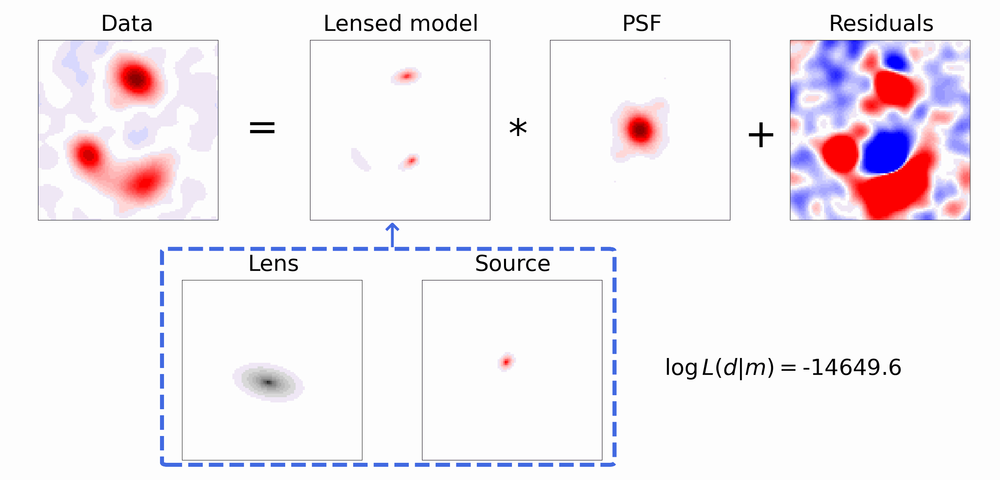
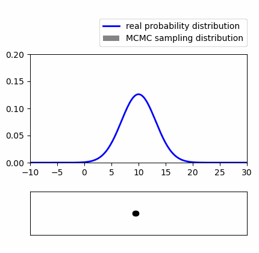

Nan Zhang
University of Illinois Urbana-Champaign
Hi, I'm Nan Zhang, a Ph.D. candidate in Physics at the University of Illinois Urbana-Champaign. My research focuses on strong gravitational lensing, dark matter substructure, and computational methods for analyzing astronomical data.
I develop numerical and statistical methods for gravitational lens modeling, focusing on efficient computation, Bayesian inference, and reliable uncertainty estimation. I enjoy working on problems that combine mathematical reasoning, physical modeling, and practical implementation.
Research
My research focuses on strong gravitational lensing. I use forward modeling to reproduce observed astronomical images and investigate the underlying physics.

Markov chain Monte Carlo (MCMC) methods are used to sample parameter distributions and estimate model parameters and their uncertainties.

Selected Projects
Strong Gravitational Lensing and Dark Matter Substructure
Research on gravitational lens modeling of strongly lensed galaxies, with a focus on dark matter substructure detection, source modeling degeneracies, and statistical inference.
Project RepositoryInterferometric Image-Plane Modeling
Developed computational methods for modeling interferometric observations in the image plane, including correlated-noise modeling and efficient statistical inference. The methods have been implemented in the open-source lens modeling software lenstronomy.
lenstronomy | My Pull Requests | Project RepoScientific Computing and Numerical Methods
Development and optimization of numerical algorithms for high-dimensional model fitting, linear inverse problems, and scientific software applications.
Skills & Interests
Python, NumPy, SciPy, PyTorch, C++, numerical optimization, Bayesian inference, statistical modeling, scientific computing, machine learning, and computational physics.
Contact
Email: nan.zhang.95330@gmail.com
GitHub: github.com/nanz6
LinkedIn: linkedin.com/in/nan-zhang-march30